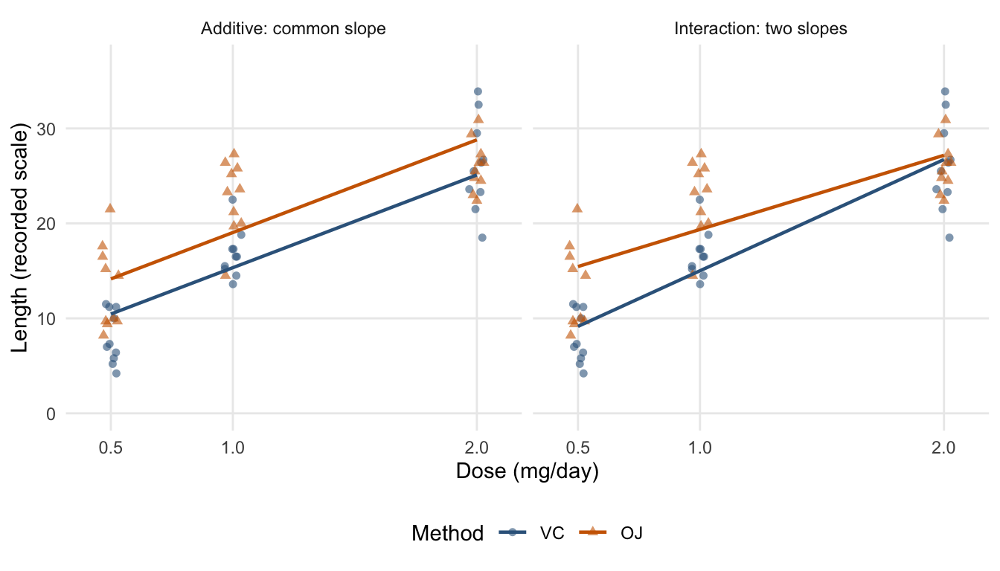
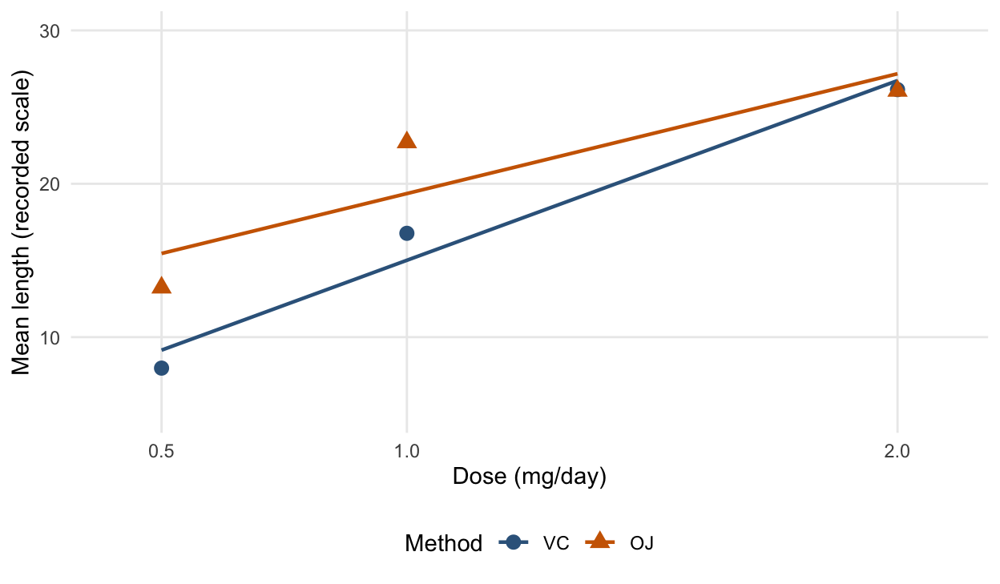

Chapter 4 asked whether additional columns of a design matrix improve a model. This chapter asks what those columns mean. We connect a scientific comparison to a mean function, construct the corresponding design matrix, and interpret the fitted coefficients.
Learning Objectives
By the end of this chapter, students should be able to:
distinguish a marginal association from an adjusted association;
translate a factor into indicator columns and identify the reference group;
count model parameters and recognize redundant columns;
write group-specific mean functions for additive and interaction models;
explain how centering and reference coding change coefficient meanings;
match a scientific question to a nested-model comparison;
use model.matrix(), lm(), and predictions to check an interpretation.
Reading. Read the sections on multiple regression, qualitative predictors, and interaction terms in Montgomery, Peck, and Vining (Montgomery et al. 2021) and Seber and Lee (Seber and Lee 2003). The R examples use built-in datasets and require no additional data downloads.
NoteTwo class meetings, one modelling workflow
In the first meeting, focus on adjusted interpretation, indicator coding, and additive models. In the second, study interactions, centering, and the model comparisons that distinguish different scientific questions. Chapter 6 will develop contrasts and inference for selected comparisons in more detail.
Our workflow is question → mean function → design matrix → interpretation → comparison. The least squares and inference tools remain those from Chapters 2–4.
5.1 Multiple regression and adjusted interpretation
For \(k\) continuous predictors, an additive mean model is
With an intercept and no redundant columns, \(p=k+1\). Throughout this course, \(p\) counts columns of the design matrix, including the intercept. A factor or an interaction can contribute several columns, so the number of named variables need not equal the number of parameters.
Full column rank gives the familiar estimator \((\mathbf X^\top\mathbf X)^{-1}\mathbf X^\top\mathbf Y\). Least squares itself does not require normal errors. For the exact \(t\) and \(F\) procedures in this chapter, we use the normal linear model from Chapter 3: fixed full-rank \(\mathbf X\) and independent \(N(0,\sigma^2)\) errors.
Definition 5.1 (Adjusted Regression Coefficient) In an additive linear mean model, \(\beta_j\) is the difference in mean response associated with a one-unit increase in \(x_j\), holding the other predictors fixed:
The intercept is the mean response when \(x_1=\cdots=x_k=0\). It may describe a useful baseline, or a point outside the range supported by the data.
Why an added predictor can change a coefficient. A simple regression of \(Y\) on \(x_1\) compares observations with different \(x_1\) values while leaving their other characteristics unadjusted. A regression on both \(x_1\) and \(x_2\) describes the association with \(x_1\) at fixed \(x_2\). If \(x_1\) and \(x_2\) vary together, these are different comparisons. Neither slope should be interpreted without naming its model.
Example 5.1 (The Same Height Measurement, Two Comparisons) Return to the 31 black cherry trees from Chapter 4. Volume is timber volume in cubic feet, Height is height in feet, and R’s variable Girth actually records diameter in inches. Each row is one tree. We rename that variable Diameter. Dataset documentation.
The unadjusted height coefficient is about 1.543 cubic feet per foot. The adjusted coefficient is about 0.339: among trees of the same diameter, one additional foot of height is associated with 0.339 more cubic feet of fitted mean volume. The fitted multiple regression equation is
These slopes answer different questions. The multiple-regression height coefficient is also the coefficient tested when Chapter 4 compared the diameter-only model with the diameter-plus-height model.
ImportantAdjustment, overlap, and causal interpretation
“Holding diameter fixed” describes a comparison in the mean model; it does not mean an experiment made the same tree taller. An adjusted association is not automatically causal. A causal interpretation needs a defensible design and additional assumptions.
Also inspect which predictor combinations occur. If two predictors nearly move together, the data provide little information about changing one while holding the other fixed. Exact linear dependence causes rank deficiency; strong but imperfect dependence can inflate coefficient uncertainty. Detailed diagnostics come later.
Exercise 5.1 (In Class: Interpret 0.339) Which interpretation matches the adjusted height coefficient?
A. Increasing any tree’s height by one foot causes its volume to increase by 0.339 cubic feet.
B. At the same diameter, a one-foot height difference corresponds to a 0.339-cubic-foot difference in fitted mean volume.
C. Every tree one foot taller has exactly 0.339 more cubic feet of observed volume.
Solution 5.1. B. The coefficient describes an adjusted mean association. It is neither an automatic causal effect nor an exact difference between individual responses.
5.2 Categorical predictors are columns of a design matrix
A categorical variable records group membership. Its labels do not supply numerical distances. Coding three unordered groups as 1, 2, and 3 and fitting one slope would impose equally spaced means; that is a modelling restriction, not a neutral relabeling.
Definition 5.2 (Reference-Group Indicator Coding) For a factor with \(g\) observed levels, choose one reference level. With an intercept, use \(g-1\) indicators for the remaining levels. For levels A, B, and C with A as reference, let
ch5_groups <-data.frame(group =factor(rep(c("A", "B", "C"), each =2),levels =c("A", "B", "C")))contrasts(ch5_groups$group) <-contr.treatment(levels(ch5_groups$group), base =1)knitr::kable(model.matrix(~ group, data = ch5_groups),row.names =FALSE)
(Intercept)
groupB
groupC
1
0
0
1
0
0
1
1
0
1
1
0
1
0
1
1
0
1
Why not use all indicators with an intercept? For every observation,
\[
D_{Ai}+D_{Bi}+D_{Ci}=1.
\]
The intercept column is therefore the sum of the three indicator columns. Four written coefficients would represent only three independent columns. One alternative is to remove the intercept and use all three indicators:
This cell-means parameterization describes the same set of mean vectors. In R it is y ~ 0 + group. Removing the intercept here does not force the group means to zero; the indicator columns already span the constant vector.
Example 5.2 (Different Coefficients, the Same Group Means) Suppose the fitted means for A, B, and C are 18, 22, and 19.
Reference
Intercept
Other coefficients
A
18
B minus A: 4; C minus A: 1
B
22
A minus B: −4; C minus B: −3
Changing the reference changes the coordinate system for the same fitted means. It does not change fitted values, residuals, SSE, or model rank. A coefficient test can nevertheless change because its named comparison has changed: B versus A is a different null hypothesis from C versus B.
Exercise 5.2 (In Class: Count Columns, Not Variable Names) A model contains an intercept, two continuous predictors, and one four-level factor using reference coding. Assume all columns are independent and \(n=40\).
How many regression parameters are there?
What are the residual degrees of freedom?
Would replacing the three factor indicators by all four indicators while retaining the intercept add an identifiable parameter?
Solution 5.2. There are \(p=1+2+3=6\) parameters and \(40-6=34\) residual degrees of freedom. No: all four indicators together with the intercept introduce a redundant column.
5.3 A continuous predictor and a group indicator
We now follow one dataset through several models. R’s ToothGrowth data record an odontoblast-length response from 60 guinea pigs. The predictors are vitamin C dose (0.5, 1, or 2 mg/day) and delivery method: orange juice (OJ) or ascorbic acid (VC). Each row is one animal. Dataset documentation.
Question. How does the mean response vary with dose, and is the OJ-minus-VC mean difference the same at every dose? We first describe fitted associations. The dataset documentation alone is not a complete account of randomization or of all conditions needed for a causal conclusion.
Show R code
ch5_tooth <- datasets::ToothGrowthch5_tooth$supp <-factor(ch5_tooth$supp, levels =c("VC", "OJ"))ch5_tooth$dose_c <- ch5_tooth$dose -1ch5_tooth$dose_f <-factor(ch5_tooth$dose, levels =c(0.5, 1, 2))contrasts(ch5_tooth$supp) <-contr.treatment(levels(ch5_tooth$supp), base =1)contrasts(ch5_tooth$dose_f) <-contr.treatment(levels(ch5_tooth$dose_f), base =1)stopifnot(!anyNA(ch5_tooth))ch5_cell_summary <-aggregate( len ~ supp + dose, data = ch5_tooth,FUN =function(y) c(n =length(y), mean =mean(y)))ch5_summary_table <-data.frame(ch5_cell_summary[1:2], ch5_cell_summary$len)knitr::kable(ch5_summary_table, digits =2,col.names =c("Method", "Dose (mg/day)", "n", "Mean length"))
Method
Dose (mg/day)
n
Mean length
VC
0.5
10
7.98
OJ
0.5
10
13.23
VC
1.0
10
16.77
OJ
1.0
10
22.70
VC
2.0
10
26.14
OJ
2.0
10
26.06
Both delivery methods are observed at each of the three doses, with 10 animals per combination. This gives overlap for comparing methods at those doses. It does not supply observations at every dose between them or outside the observed range.
Definition 5.3 (Additive Continuous-by-Group Model) Let \(x\) be dose, \(x_c=x-1\), and \(z=\mathbb 1\{\mathrm{OJ}\}\). The additive model is
\[
\mu(x,z)=\beta_0+\beta_x x_c+\beta_g z.
\]
Method
Mean function
Slope in dose
VC (\(z=0\))
\(\beta_0+\beta_x(x-1)\)
\(\beta_x\)
OJ (\(z=1\))
\(\beta_0+\beta_g+\beta_x(x-1)\)
\(\beta_x\)
The two lines are parallel, and \(\mu(x,1)-\mu(x,0)=\beta_g\) at every dose. The intercept is the VC mean at 1 mg/day, because that is where \(x_c=0\).
At a fixed delivery method, a one-mg/day dose increase is associated with 9.764 more units of fitted mean length under this linear model. At a fixed dose, the fitted OJ mean exceeds the VC mean by 3.700 units. Neither statement says that every individual response follows its fitted mean exactly.
Read the design matrix. There are three columns: intercept, centered dose, and the OJ indicator. The table below shows one row for each predictor combination; the full matrix repeats each combination for 10 animals.
With full rank, this model has \(p=3\) and \(60-3=57\) residual degrees of freedom. Using numeric dose imposes a straight-line mean within each method; treating the same three doses as a factor permits a separate mean at each dose. We will compare those assumptions below.
5.4 Interactions and conditional comparisons
Definition 5.4 (Continuous-by-Group Interaction) Add the product column \(x_cz\):
Thus \(\beta_g\) is the group difference at 1 mg/day, and \(\beta_{xg}\) is the OJ-minus-VC difference in slopes. An interaction means that one comparison depends on another predictor.
The VC slope is about 11.716, and the OJ slope is \(\hat\beta_x+\hat\beta_{xg}\approx7.811\), using the unrounded estimates. The OJ-minus-VC difference is about 4.351 at 1 mg/day and 0.446 at 2 mg/day. A negative interaction coefficient means that the group difference decreases as dose increases; it does not mean that the OJ dose slope is negative.

Figure 5.1: Additive and interaction fits to the same observations. Horizontal jitter separates overlapping points for display only; both models use the original doses. The additive model imposes parallel lines. The interaction model permits different slopes, while still requiring each method’s mean to be linear in dose.
Centering changes the baseline, not the fitted model. Start with the uncentered expression \(b_0+b_xx+b_gz+b_{xg}xz\). Substitute \(x=x_c+c\) to obtain
Centering at \(c\) changes the intercept to the reference-group mean at \(c\) and the group coefficient to the difference at \(c\). The group-specific slopes, fitted means, residuals, and SSE stay the same when all the corresponding terms are retained.
Zero dose was not observed. Centering at an observed dose gives the group coefficient a more directly supported meaning. It does not establish linearity or create additional observations.
ImportantKeep the lower-order terms when interpreting an interaction
A model such as dose_c * supp includes both main effects and their interaction. Do not remove a main effect merely because its coefficient has a large p-value in the interaction model. That coefficient concerns a particular baseline, and dropping it imposes a constraint that can depend on the choice of center or reference group. Start with the scientific restriction you intend to test.
Other interactions. For two continuous predictors, \(\mu=\beta_0+\beta_1x_1+\beta_2x_2+\beta_{12}x_1x_2\) has slope \(\beta_1+\beta_{12}x_2\) in \(x_1\). For two factors with \(a\) and \(b\) levels and all cells observed, reference coding uses \((a-1)(b-1)\) interaction columns. With all main effects, there are \(1+(a-1)+(b-1)+(a-1)(b-1)=ab\) parameters, one mean per cell. The same principle applies: a comparison varies with another predictor.
Exercise 5.3 (In Class: Which Difference Is Six?) Suppose \(x_c=x-1\) and \(\widehat\mu=10+2x_c+6z-x_cz\).
What is the slope for \(z=1\)?
At which original \(x\) value is the group difference 6?
What is the group difference at \(x=3\)?
Solution 5.3. The slope for \(z=1\) is \(2-1=1\). The group difference is 6 at \(x=1\), where \(x_c=0\). At \(x=3\), \(x_c=2\) and the difference is \(6-2=4\).
Under the reduced model and the stated normal, constant-variance error assumptions, the reference distribution is \(F_{p_F-p_R,n-p_F}\). These comparisons answer different questions:
Question
Reduced model
Full model
Numerator df
Are the dose slopes equal?
dose_c + supp
dose_c * supp
1
Are the two entire dose lines identical?
dose_c
dose_c * supp
2
Is a straight line within each method adequate at the observed doses?
dose_c * supp
dose_f * supp
2
Equal slopes. The additive model sets \(\beta_{xg}=0\). Comparing it with the interaction model tests whether the OJ-minus-VC difference is constant across dose under the two-line framework.
Show R code
anova(ch5_fit_add, ch5_fit_int)
Analysis of Variance Table
Model 1: len ~ dose_c + supp
Model 2: len ~ dose_c * supp
Res.Df RSS Df Sum of Sq F Pr(>F)
1 57 1022.56
2 56 933.63 1 88.92 5.3335 0.02463 *
---
Signif. codes: 0 '***' 0.001 '**' 0.01 '*' 0.05 '.' 0.1 ' ' 1
The comparison has 1 numerator and 56 denominator degrees of freedom, with \(F\approx5.334\) and \(p\approx0.0246\). Under the model assumptions, this is evidence against equal slopes. It is not a test that the two groups have identical means at every dose.
Identical lines. For the two lines to coincide, both \(\beta_g=0\) and \(\beta_{xg}=0\) must hold. A single p-value for suppOJ tests only the difference at the centering dose. Test the two restrictions together instead:
Show R code
ch5_fit_dose <-lm(len ~ dose_c, data = ch5_tooth)anova(ch5_fit_dose, ch5_fit_int)
Analysis of Variance Table
Model 1: len ~ dose_c
Model 2: len ~ dose_c * supp
Res.Df RSS Df Sum of Sq F Pr(>F)
1 58 1227.91
2 56 933.63 2 294.27 8.8253 0.000466 ***
---
Signif. codes: 0 '***' 0.001 '**' 0.01 '*' 0.05 '.' 0.1 ' ' 1
Check the straight-line restriction. Dose takes three numerical values; the two-line model constrains each group’s three fitted means to lie on a line. A factor-dose-by-method model estimates all six cell means:
Analysis of Variance Table
Model 1: len ~ dose_c * supp
Model 2: len ~ dose_f * supp
Res.Df RSS Df Sum of Sq F Pr(>F)
1 56 933.63
2 54 712.11 2 221.53 8.3994 0.0006667 ***
---
Signif. codes: 0 '***' 0.001 '**' 0.01 '*' 0.05 '.' 0.1 ' ' 1
The six-cell model has \(p=6\) and 54 residual degrees of freedom. The comparison adds two independent directions, one departure from a straight line for each method’s three means. Here \(F\approx8.399\) and \(p\approx0.000667\) provide evidence against the straight-line restriction under the common-variance normal model. The fitted lines were useful for learning coefficient interpretation; this check shows why their shape should not be accepted automatically for these data.

Figure 5.2: Cell means and the two-line fit. Points are the observed mean responses at each method-dose combination. The six-cell model reproduces these means; the straight lines impose additional restrictions. No observations outside 0.5–2 mg/day are shown.
NoteA factor is a block of columns
The three-level dose_f main effect uses two columns. The dose_f:supp interaction uses two more. A scientific test concerning an entire factor or interaction may therefore require a joint test, rather than selecting one printed coefficient p-value. Always count independent restrictions and use the full model’s residual degrees of freedom.
5.6 Coding checks and the bridge to contrasts
R’s model.matrix() reveals the columns created by a formula. Use it to connect the software coefficients to your written mean model.
Show R code
knitr::kable(model.matrix(~ dose_c * supp, data = ch5_profiles),row.names =FALSE)
(Intercept)
dose_c
suppOJ
dose_c:suppOJ
1
-0.5
0
0.0
1
0.0
0
0.0
1
1.0
0
0.0
1
-0.5
1
-0.5
1
0.0
1
0.0
1
1.0
1
1.0
The last column is the product of centered dose and the OJ indicator. It is zero for every VC observation; it changes the OJ slope relative to VC.
Verify a reference change. Refit with OJ as the reference while retaining the same model terms and observations:
The intercept now describes OJ at 1 mg/day, and the dose coefficient is the OJ slope. The fitted values and SSE agree with the VC-reference fit because the two design matrices span the same column space.
Express a comparison before calculating it. In the VC-reference interaction model, order the coefficient vector as \((\beta_0,\beta_x,\beta_g,\beta_{xg})\). The OJ-minus-VC comparison at dose \(x_0\) is
Here the comma-separated tuple denotes a column vector, as in Chapter 4. At \(x_0=1\), the comparison is \(\beta_g\); at \(x_0=2\), it is \(\beta_g+\beta_{xg}\). The linear-combination machinery from Chapter 3 therefore applies. Its standard error uses the full coefficient covariance matrix, including the covariance between the group and interaction estimates. Chapter 6 develops these comparisons, coding invariance, and the distinction between one comparison and a family of comparisons.
5.7 Concept checks and practice
Exercise 5.4 (Concept Check: Choose or Mark True/False)
T/F. A multiple-regression coefficient always has the same interpretation as the slope in a simple regression using that predictor alone.
Multiple choice. With an intercept, a three-level factor normally contributes (A) one, (B) two, or (C) three independent indicator columns.
T/F. Reversing the reference category, while preserving the same model space, changes fitted values and SSE.
Multiple choice. In a binary-group interaction model centered at \(x=1\), the group coefficient compares the groups (A) at every \(x\), (B) at \(x=0\), or (C) at \(x=1\).
T/F. A negative interaction coefficient implies a negative slope in the non-reference group.
Multiple choice. Testing identical lines requires (A) the interaction coefficient alone, (B) the group and interaction coefficients jointly, or (C) the intercept alone to be zero.
T/F. Replacing numeric dose by a three-level factor merely renames the coefficients and must preserve the fitted means.
T/F. Failing to reject equal slopes proves that the two population slopes are exactly equal.
Solution 5.4.
Item
Answer
Reason
1
F
Adjustment changes the comparison.
2
B
One level serves as the reference.
3
F
The fitted mean space is unchanged.
4
C
The group coefficient is evaluated at centered dose zero.
5
F
Add the interaction coefficient to the reference-group slope.
6
B
Both intercept difference and slope difference must vanish.
7
F
A factor can relax the straight-line restriction.
8
F
Non-rejection is not proof of equality.
Exercise 5.5 (Practice: State the Restrictions and Degrees of Freedom) Consider \(n=48\) observations, a binary group \(z\), and a continuous predictor \(x\). Assume the relevant design matrices have full rank and the normal-model assumptions hold. The full model is \(\mu=\beta_0+\beta_xx+\beta_gz+\beta_{xg}xz\).
Write the null hypothesis for parallel lines and give both F degrees of freedom.
Write the null hypothesis for identical lines and give both F degrees of freedom.
Express the group difference at \(x=2\) as a linear combination of coefficients.
If the full model has SSE 440 and the additive model has SSE 500, compute the partial F statistic for equal slopes.
Solution 5.5.
\(H_0:\beta_{xg}=0\); degrees of freedom \((1,44)\).
\(H_0:\beta_g=\beta_{xg}=0\); degrees of freedom \((2,44)\).
\(\Delta(2)=\beta_g+2\beta_{xg}\), with column vector \(\boldsymbol\ell=(0,0,1,2)\) in the displayed coefficient order.
\(F=\{(500-440)/1\}/(440/44)=6\).
Summary. The model’s columns determine what its coefficients mean. An additive slope is an adjusted mean comparison; factor coefficients depend on a reference group; an interaction makes a comparison depend on another predictor. Centering and releveling preserve fitted values when they only reparameterize the same mean space. Changing the mean space, such as relaxing a straight-line restriction, is a substantive modelling decision that can be assessed with the nested-model tools from Chapter 4.
Montgomery, Douglas C, Elizabeth A Peck, and G Geoffrey Vining. 2021. Introduction to Linear Regression Analysis. John Wiley & Sons.
Seber, George AF, and Alan J Lee. 2003. Linear Regression Analysis. John Wiley & Sons.